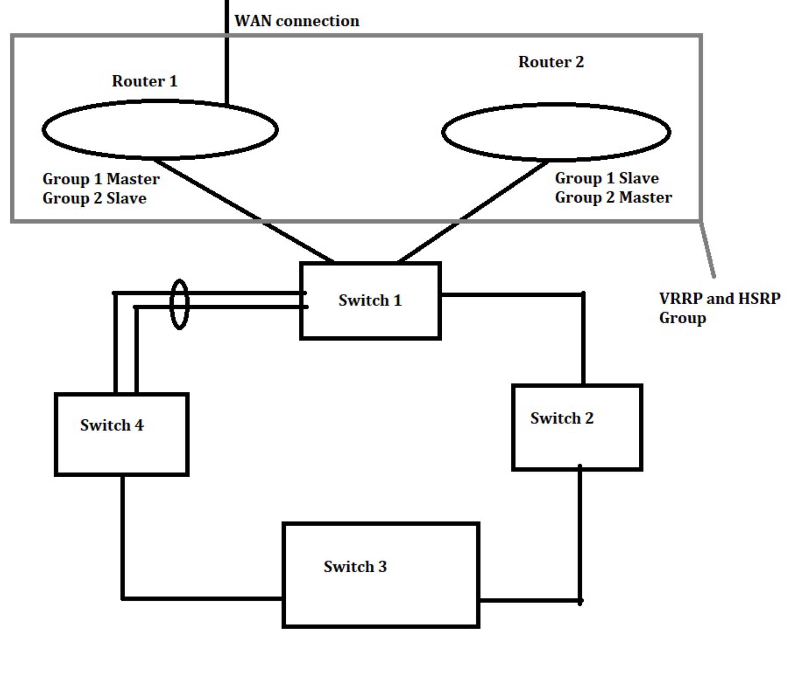

Redundant LAN Gateways
In this lab, the operations of LAN-centric concepts were examined. Additional reliability and redundancy was added to the network to ensure robust operations. Also another router was introduced into the network to act as a secondary gway for each VLAN in the network. Two dynamic and effective ways of providing a redundant gateway, VRRP and HSRP, were implemented across the network. All VLANs from the first lab were used throughout this lab.
Virtual router redundancy protocol (VRRP) was implemented and configured in the network architecture. The redundancy functions were balanced across both gateways, meaning both routers had a Master/primary role and a Slave/backup role. Wireshark was used to capture the communication between the gateways that maintain the current redundancy. VRRP_Backup was forced to become VRRP_Master for at least one of the VLANs. Wireshark was then used again to capture the traffic flow from the host on that VLAN to an external host to demonstrate the timing for failover to occur, which was rather quick and only took a few seconds. The redundancy function on the initial VRRP_Master was re-enabled.
Hot standby router protocol (HSRP) was implemented and configured across the network. Just like VRRP, the redundancy functionality was balanced across both gateways by adding Master/Primary and Slave/Backup roles. Everything that was done with VRRP was also done with HSRP.
The differences between VRRP and HSRP are very slight when looking at the basic configuration. Both produce the same end result. A major difference between the two protocols is that HSRP is proprietary to Cisco and can only be used on Cisco devices. VRRP is a standards based protocol and is vendor independent to allow flexibility when choosing network devices. With HSRP, each interface must have an IP address that is separate from the HSRP group address, while VRRP lets you share the master's interface IP address. VRRP is also configured to preempt by default where HSRP is not.
Network Gear: HP ProCurve, Cisco Catalyst 3750, Cisco 2950 Switch, Cisco 1900 Router
Tools: Wireshark
